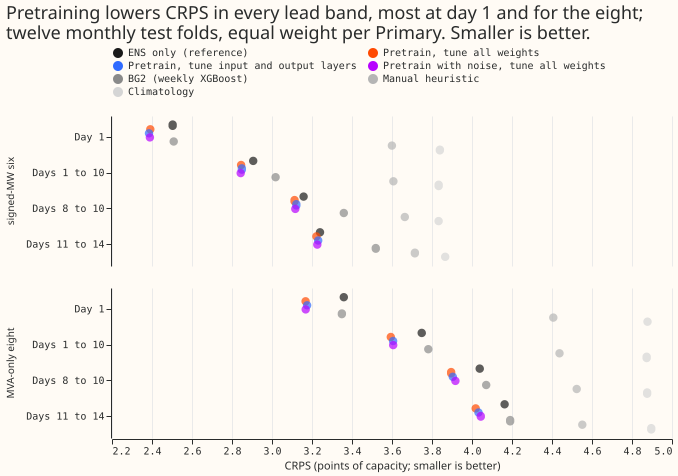
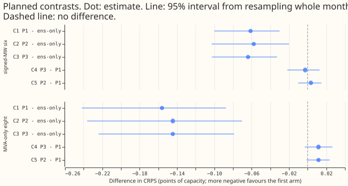
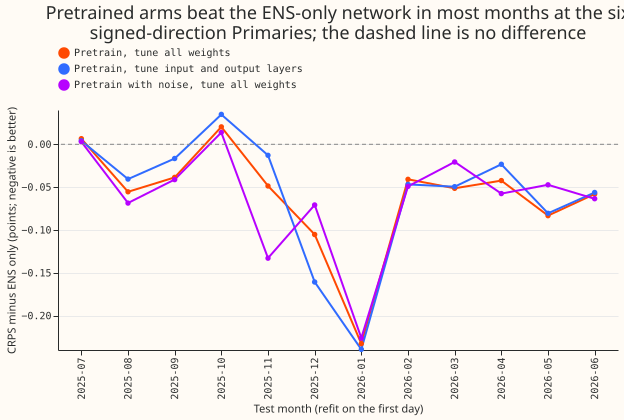
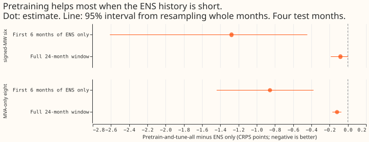

Does pretraining the pooled mixture density network on estimates of past weather (ERA5 and CAMS) before fine-tuning on ENS forecasts lower the Primary demand score?
Take-home message: pretraining on six years of ERA5 and CAMS weather lowers the pooled neural
network's score by about 0.09 points. ERA5 is the European Centre for Medium-Range Weather
Forecasts' reanalysis (an estimate of past weather), CAMS is the Copernicus Atmosphere Monitoring
Service's estimate of past sunlight, and ENS is the ensemble weather forecast archive that starts in
2024-04. The score is the continuous ranked probability score (CRPS) at days 1 to 10, in points of
capacity; smaller is better. Arm P1 pretrains and then fine-tunes all weights. Arm P2 freezes the
second linear layer during fine-tuning. Arm P3 adds forecast-like noise to the pretraining weather.
At the six Primaries whose power is signed megawatts (MW), P1 scores 2.847 against 2.908 for the same
neural network trained on ENS rows only (difference -0.061, 95% interval -0.100 to -0.030). At the
eight Primaries that report apparent power in megavolt-amperes (MVA) only, the scores are 3.599 and
3.755 (-0.156, -0.242 to -0.088). The verdict is supported, narrowly: the six-Primary
interval of P1 ends at -0.0300 and that of P3 at -0.0327, both just below the 0.03-point threshold.
P2 and P3 differ from P1 by under 0.015 points at the six. Every interval comes from 12 monthly test
folds (2025-07 to 2026-06), resampling whole months.




Results
CRPS at days 1 to 10 over 12 monthly folds, equal weight per Primary, in points of capacity (smaller is better). The arms are scored on every half-hour they share.
| Arm | Signed-MW six | MVA-only eight | D15 and D18 |
|---|---|---|---|
| ENS only (reference refit) | 2.908 | 3.755 | 9.498 |
| P1 pretrain, tune all weights | 2.847 | 3.599 | 9.093 |
| P2 pretrain, second linear layer frozen | 2.851 | 3.610 | 9.054 |
| P3 pretrain with noise, tune all weights | 2.844 | 3.610 | 9.094 |
The reference forecasts cover fewer half-hours, so they are scored together with the arms on the
half-hours that all of them share (3.05 million). On those half-hours the ENS-only network scores
2.906, 3.749, and 8.892; P1 scores 2.846, 3.594, and 8.148; and BG2 (weekly XGBoost) scores 3.018,
3.782, and 7.622, at the six, the eight, and D15 and D18. manual_heuristic scores 3.607, 4.437, and
11.267, and climatology 3.833, 4.873, and 24.094.
- Contrasts (signed-MW six / MVA-only eight, 95% interval). C1 P1 minus ENS only: -0.061 (-0.100 to -0.030) / -0.156 (-0.242 to -0.088). C2 P2 minus ENS only: -0.058 (-0.103 to -0.020) / -0.144 (-0.236 to -0.070). C3 P3 minus ENS only: -0.064 (-0.103 to -0.033) / -0.144 (-0.224 to -0.079). C4 P3 minus P1: -0.003 (-0.022 to +0.013) / +0.012 (-0.003 to +0.026). C5 P2 minus P1: +0.003 (-0.010 to +0.015) / +0.012 (-0.001 to +0.024).
- Monthly folds. P1 beats the ENS-only network in 10 of the 12 months at the signed-MW six (2025-07 and 2025-10 are slightly worse). The largest gain is in 2026-01 (-0.23).
- D15 and D18 (report-only). C1 is -0.405 (-0.856 to +0.018) and C3 is -0.403 (-0.735 to -0.086). C4 is +0.001 (-0.163 to +0.206), so noise does not help these two short-history Primaries beyond pretraining itself.
- Tails. q95 coverage at the signed-MW six is 0.901 for ENS only and 0.906 to 0.908 for the pretrained arms; q99 coverage is 0.965 against 0.971 to 0.973. All stay below nominal (0.95, 0.99), as in experiment 397.
- Low-data check (C6, four screen folds). With fine-tuning limited to the first 6 months of ENS (2024-04 to 2024-09), P1 minus the ENS-only network trained on the same rows is -1.277 (-2.612 to -0.445) at the signed-MW six and -0.855 (-1.440 to -0.377) at the MVA-only eight. On the full window the same contrast is -0.082 and -0.119. The difference of the two is -1.195 at the six.
- Screen. On four screen folds (2025-10, 2026-01, 2026-03, 2026-06) all three arms passed the advance rule against experiment 397's stored forecasts: P1 -0.061, P2 -0.059, P3 -0.053 at the six (reference standard error over seeds 0.011), and about -0.14 at the eight.
Predictions
- P1 held at the six and failed at the eight. The signed-MW six gain is -0.061, inside the predicted -0.05 to -0.20. The prediction said the gain would be smaller at the eight, but it is larger (-0.156).
- P2 held. P2 minus P1 is +0.003 at the six and +0.012 at the eight, within 0.05. Both intervals include zero, so P2 is indistinguishable from P1.
- P3 failed. The prediction was a gain at days 4 to 10 and a loss on day 1. At the six, P3 minus P1 is -0.002 on day 1 and +0.004 on days 8 to 10, the opposite pattern, and both are far inside the interval. Its q95 and q99 coverage (0.906 and 0.971) are not closer to nominal than P1's (0.907 and 0.972). No band covering days 4 to 10 alone was scored.
- P4 held numerically. The gain with 6 months of ENS (-1.277) is far more than twice the full-window gain (-0.082), but the ENS-only baseline degrades badly on 6 months of ENS, so the size of the gain reflects a failed baseline as much as the value of pretraining.
Input checks and cost
- Row counts. The 2026-01 fold has 4,979,183 fine-tuning rows (520,330 held out) and 7,894,895 pretraining rows (753,275 held out); the 2025-10 fold has 4,185,108 and 7,503,492. Pretraining rows start in 2019-09 and, for D15 and D18, as late as their data begins.
- Units. ENS and ERA5 or CAMS inputs agree in mean for all seven variables (for example temperature 11.44 against 11.74 degrees Celsius, shortwave 138 against 131 W/m²) on the 2026-01 fold. The within-day spread of ERA5 precipitation is 3 times that of the ENS ensemble mean, as expected of a smooth ensemble mean.
- Noise against spread. The root-mean-square difference between the ENS mean and ERA5, divided by the median ENS spread, is 1.2 to 3.3 at day 1 for temperature, dew point, pressure, longwave, and wind (1.1 to 1.5 at day 4), and over 40 for shortwave, whose spread is near zero at night. The noise of arm P3 equals the ENS spread, so it is smaller than the real forecast error at short lead.
- Cost. Pretraining one network took 30 to 63 seconds (40 epochs on 7 to 8 million rows), and one fine-tune took 27 to 55 seconds, against 40 to 83 seconds for an ENS-only fit. The raw pretraining matrices take about 2 seconds per Primary. A production pipeline using pretraining would need ERA5 and CAMS history kept up to date, a pretraining step run rarely, and a monthly fine-tune.
- Memory. The scoring script held 9 GB of memory while scoring 12 folds of 7 arms at once; the fits peaked below 3 GB.
Limits
- Training reaches the epoch limit. 56 of 72 pretraining runs and 8 of 24 ENS-only fits stopped at 40 epochs, so a longer schedule might help; this was not tried.
- The pretrained network sees ERA5 up to the refit in the low-data check. The check therefore measures less ENS, not less data. The 2026-06 fold has 4 months of ENS before 2024-10-01 and the others 6.
- P3 noise is independent per row and constant over the day. Real forecast errors are correlated across lead times, and the median spread pools all hours of the day, so shortwave noise is non-zero at night.
- No hyperparameter of the fine-tuning stage was tuned. All arms use one setting and one fine-tuning rate.
- Low-data check at D15 and D18. The ENS-only network trained on 6 months has too little data at these two Primaries (difference -20.6 points), so the D15 and D18 result of the low-data check is not interpreted.
Plan as committed before any fit
The sections below are the plan as committed before any fit; counts given as estimates there are measured in "Input checks and cost" above.
Design note
Every arm is the experiment 397 pooled plain network with fixed carried components. Names carry the components, so a reader sees what each arm inherits:
pooled-emb: one network across the 16 Primaries with an 8-wide Primary embedding, because experiment 406 found the embedding carries the pooling gain.summary: the inputs are the ensemble mean and ensemble standard deviation of each of the seven weather variables (experiment 397's summary scheme), so the network is applied once per run.g09: 64 units, 2 hidden layers, 3 mixture components, dropout 0.1, the setting experiment 397 chose on its validation block. No setting is tuned here.- Not carried: the attention gate (inert in experiment 397), the explicit solar term, the lag-trust component, and the D15 and D18 start cut. Each is added in the assembly if it wins elsewhere.
Arms (arm names are <components>_<training>):
| Arm | Name | Training |
|---|---|---|
| Reference | pooled-emb-summary-g09_ens-only |
Stored forecasts of experiment 397 (plain_pooled, summary scheme), three seeds |
| P1 | pooled-emb-summary-g09_era5cams-pretrain_ft-all |
Pretrain on ERA5 and CAMS, then fine-tune every weight on the ENS rows |
| P2 | pooled-emb-summary-g09_era5cams-pretrain_ft-input-head |
Same pretraining; the second linear layer (net[3]) is frozen, and the first linear layer, the Primary embedding, and the output layer are fine-tuned |
| P3 | pooled-emb-summary-g09_era5cams-noisy-pretrain_ft-all |
As P1, with forecast-like noise added to the pretraining weather means |
Pretraining rows. A pseudo-run starts every second day from 2019-09-01 at 00:00 UTC, with the
origin 9 hours later (the publication delay of experiment 87). Each pseudo-run has one row per
Primary and half-hour for leads 0.5 to 351 hours (the range of experiment 397's rows). Weather is
the Primary's ERA5 value at the half-hour stamp (temperature, dew point, surface pressure, longwave,
precipitation, 10 m wind speed; the file is already on the half-hourly grid), with CAMS global
horizontal irradiance in place of the ERA5 shortwave. Power and the three origin lags come from the
dense power grid with experiment 87's origin_lags, so the lags obey the same
newest-usable-observation rule as an ENS row. Rows whose power is missing or flagged are dropped, as
in experiment 397. The pretraining set holds an estimated 8 to 13 million rows depending on the
fold; the build prints the count per fold.
Spread inputs for pretraining rows. ERA5 has no ensemble spread, so the std_* input columns of
a pretraining row take the median of the ENS std_* column at that lead band (24-hour bands) over
the fold's own ENS training rows. The mean-input and standard-deviation-input distributions then
match what the network sees at fine-tuning. This table, the standardiser, and every other fitted
statistic use only rows with valid time at least 3.5 hours before the refit, and exclude the
held-out weeks.
The noise of arm P3 is the ENS spread. P3 adds independent Gaussian noise to each mean_* input
of a pretraining row, in the transformed input space, with standard deviation equal to the median
ENS std_* input at that lead band: the noise grows with lead because the ENS spread does. The draw
is made once per fold with a fixed seed, shared by all three network seeds, and stored; the standard
deviation inputs are not perturbed. The P3-minus-P1 contrast therefore also tests noise as a
regulariser. The spread of an ensemble mean is close to its error only for a well-calibrated
ensemble, so the build also prints, per variable and lead band, the ratio of the root-mean-square
difference between ENS mean and ERA5 to that spread, as a check that the noise is neither far too
small nor far too large. The rule stays "noise equals the median spread" whatever the ratio, and the
ratio is reported.
Fine-tuning rows. These are exactly the rows of experiment 397's build_train for the fold: ENS
rows whose inputs are the 51-member mean and standard deviation of each weather variable, the 24
months before the refit within the ENS archive (from 2024-04-01), one week in 12 held out for early
stopping, runs near the held-out weeks purged, and recency weights with a half-life of 0.5 years.
The build prints the fold's row count and checks it against the row count of experiment 397's stored
fold. The standardiser and the per-Primary target mean and standard deviation of the fold are fitted
on those rows and reused unchanged for the pretraining rows, so both stages see the same input scale
and the same targets.
Leakage rule. A fold with test month M and refit time R (00:00 UTC on the first day of M) sees a pretraining row only if its valid time is at least 3.5 hours before R and its origin is at or before R (experiment 87's rule). The same rule bounds the ENS rows, the median-spread table, the standardiser, and the CAMS and ERA5 values used. The early-stopping weeks of the pretraining stage are the same absolute weeks as the fine-tuning stage (week index of the origin day, one in 12), and the runs near them are purged from both stages, so a pretraining row never trains on a week the fine-tuning stage validates on. Inference uses ENS only and the same standardiser. The build asserts the valid-time and origin bounds on every array it hands to a network.
Frozen parameters in arm P2 are excluded from the optimiser, so weight decay does not shrink them. Dropout stays active during fine-tuning, as in every arm.
Time and unit alignment. The build pins each convention before any fit. A CAMS timestamp is
the end of its hour, joined on (time - 1 µs).truncate("1h") + 1h as the data-processing page
says, and the ERA5 timestamp convention is read from experiment 22's loader and matched to ENS's.
The build prints, per variable, the mean, standard deviation, and 1st and 99th percentiles of the
pretraining inputs beside the ENS inputs of the same fold, and stops if a unit differs by a factor
over 3 (precipitation in millimetres per second, shortwave in W/m²). The CAMS swap is applied before
the P3 noise.
Training recipe. Pretraining: AdamW at 5e-4, weight decay 1e-3, batch 16,384, at most 40
epochs, patience 6, no recency weights (the purpose is the long history), early stopping on the
pretraining held-out weeks. Fine-tuning: AdamW at 2e-4, the same weight decay, batch size, epoch
limit, and patience, the experiment 397 recency weights, early stopping on the ENS held-out weeks,
starting from the best pretrained weights. Three seeds (0, 1, 2) as in experiment 397; seed s
seeds both stages. One pretrained network per fold and seed is shared by P1 and P2.
Scale of the work. The screen is 4 folds, 3 seeds, 2 pretrainings (clean and noisy), and 3
fine-tunings: 24 pretrainings and 36 fine-tunings. Each fine-tune and each pretraining is a
7,305-parameter-scale network on up to 13 million rows, so one fit runs for minutes on the GPU. The
resource limits are one GPU process under 8 GB, one feeder core, MemoryMax=8G, and a stop line of
12 GB available memory.
Earlier advice, and the replicate
- Four screen folds, registered before any fit. The four months are those of
common.md(2025-10, 2026-01, 2026-03, 2026-06). December is left out to save compute, and the maintainer's brief asks for four folds. The stored December forecasts are not read. - Advice followed: a pooled network with a Primary embedding (experiments 403 and 406) and no attention gate (experiment 397). Advice that cautions: experiment 1 found ERA5 training of a weather-to-power model helps only up to day 6, and experiment 149 found a longer history inconclusive for the generalised additive model, so a null result is plausible.
- Replicate: ENS-trained arms have a weak replicate over 2025-04 to 2025-06 at 13 Primaries
(
evaluation-protocol-demand.md). The screen does not read it, and no adoption is sought. - Climatology is refitted per fold on the fold's training window and repeated once per seed.
- A test checks that the held-out-week phase of origin days before 2024-04 is consistent with the phase of the ENS rows.
- Pretraining row count: each Primary's first usable power date is printed and the measured row count replaces the estimate of 8 to 13 million.
Known limits, registered before any fit
- Low-data check: the fold's 24-month window limits the ENS rows, so the 2026-06 fold holds 4 months of ENS before 2024-10-01 and the other folds 6. The pretrained network has seen ERA5 and CAMS rows up to the refit, including the months the fine-tuning drops, so C6 measures less ENS rather than less data. Row counts are logged per fold.
- P3 noise: the median spread by lead band pools all hours of the day, so shortwave noise is non-zero at night. The write-up reports this as a limit of arm P3.
Planned checks the write-up reports
- Row counts: pretraining and fine-tuning rows per fold, and the number of Primaries and years each contributes.
- Absolute skill: CRPS at days 1 to 10 for every arm beside BG2,
manual_heuristic, andclimatology, at the signed-MW six and the MVA-only eight. - Tails: q95 and q99 coverage at both groups, with the lead-band breakdown.
- Low-data check (C6): the arm with the lowest signed-MW-six screen CRPS among P1 to P3 and the ENS-only network, both fine-tuned (or trained) on only the first 6 months of ENS (2024-04-01 to 2024-09-30), three seeds, on the four screen folds.
- Production cost: one pretrained network refreshed rarely (the build and fit time measured here), plus a cheap monthly fine-tune (its measured time), and the two weather feeds it needs (ERA5 and CAMS history).
- Figures first: the headline chart of CRPS against lead for all arms, the gain by Primary, and the coverage by lead band, each with plain captions.
What would stop the experiment
If a build assertion fails on leakage, the experiment is invalid and stops. If the pretrained
network's held-out NLL on ERA5 inputs is no better than the untrained network's, pretraining has
failed and the verdict is failed for that arm.
Evidence this plan follows
- Follows experiment 403 and experiment 406: one pooled network with a Primary embedding.
- Follows experiment 397: no attention gate, summary inputs, setting g09, and its tails flagged as the open problem.
- Departs from the experiment 412 capacity-prior arms, which do not apply here because the pretraining target is the same signed-MW or MVA power as the fine-tuning target.
- Experiment 413 (differentiable-physics network) did not advance, and experiment 406 found the pooled gain grows with short histories, which motivates the low-data check C6.